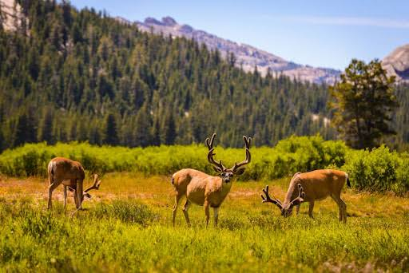

Find a Hunt
Explore hunting opportunites throughout California and search by game species or region.
Explore Hunting Locations
Find hunting opportunities, game species, seasons, and resources throughout California.
Find a HuntExplore hunting opportunites throughout California and search by game species or region.
Explore Hunting LocationsLearn about popular California game species and where hunting opportunities can be found.
View Game SpeciesCalifornia hunting seasons and regulations vary by species, zone, and hunting method. Always verify current regulations before hunting.
View Hunting Resources